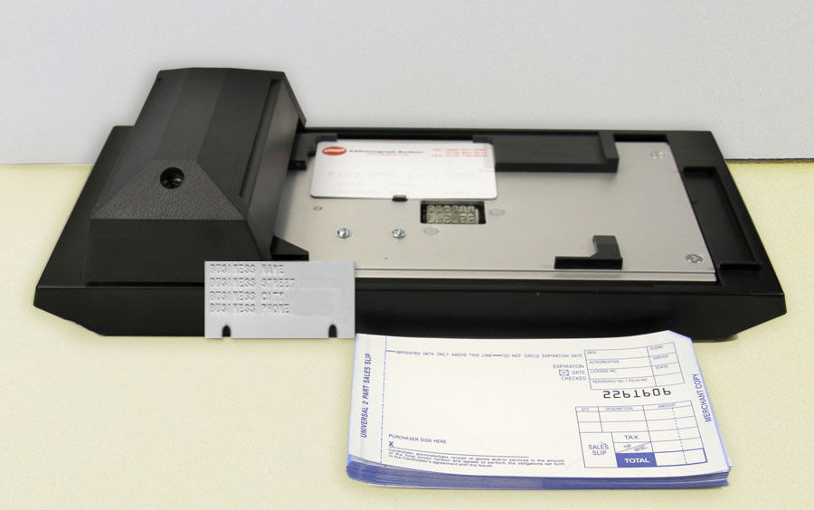

Cartes de paiement
Passé, Présent, Futur
Cryptoparty - 21 Mars 2015
Grégory Estrade - @Torlus sur Twitter, GitHub.
Au programme
- Anatomie d'un paiement.
- Les cartes bancaires en proximité.
- La sécurité à l'ère d'Internet.
- Présent et futur proche.
Les cartes bancaires en proximité
La préhistoire: utilisation de l'embossage.

Les pistes magnétiques.
La carte à puce.
Le sans-contact.